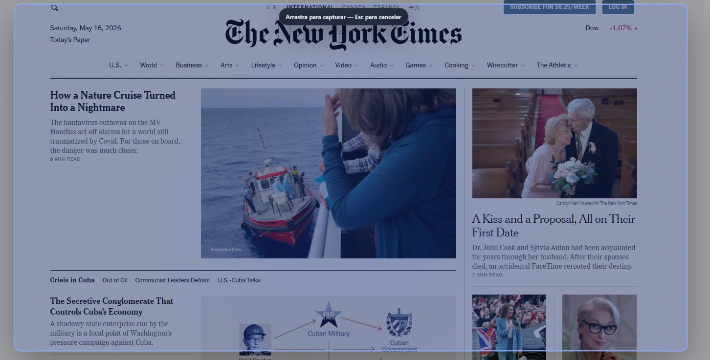
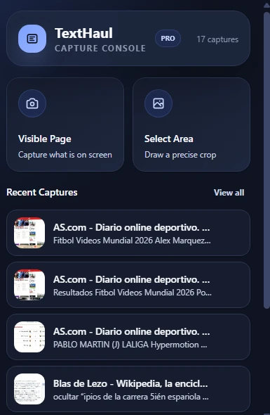
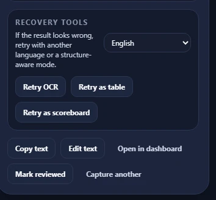
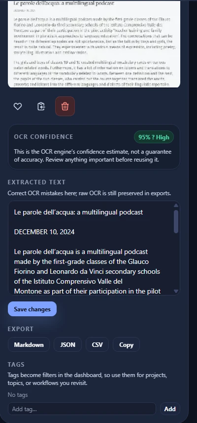
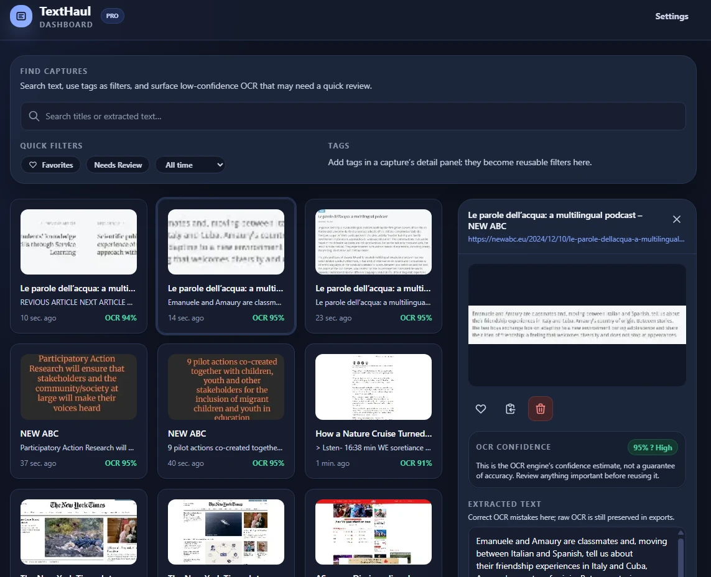
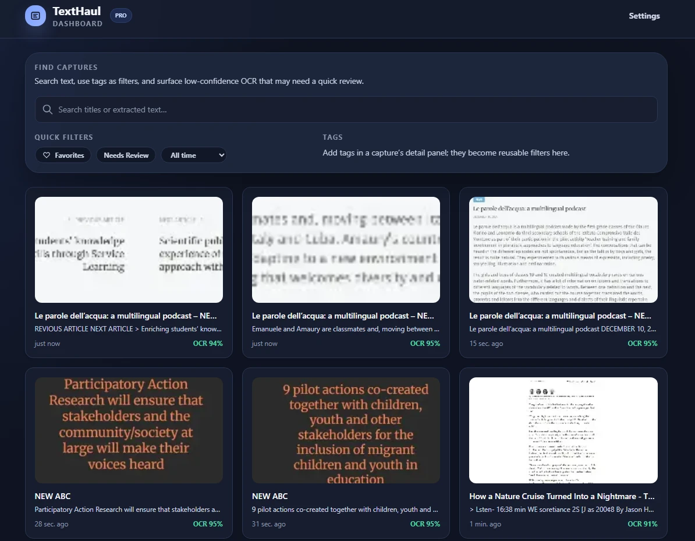
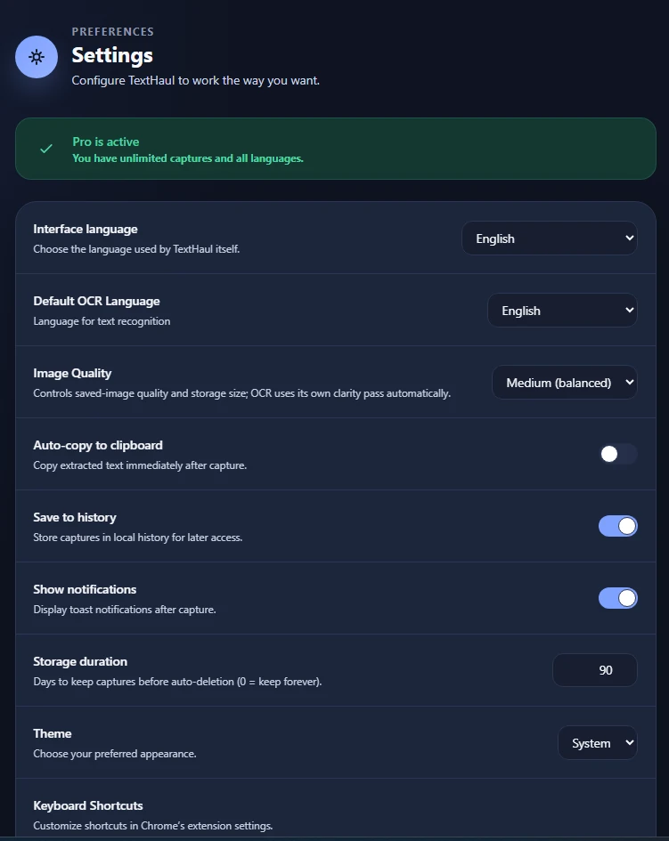

Grab what is on screen
Use the popup, a shortcut, or a precise area selection when page text cannot be copied normally.
Capture a visible page or a precise region, review the OCR when it is uncertain, and keep useful snippets searchable without sending screenshots away.



Workflow
TextHaul is built around the full loop, not just the screenshot: capture quickly, fix weak results, then reuse what matters later.
Use the popup, a shortcut, or a precise area selection when page text cannot be copied normally.
Confidence is explained, text stays editable, and the raw OCR is preserved for export.

When a result is messy, rerun OCR with another language or a structure-aware table or scoreboard mode.
Library
Find captures by extracted text, tags, favorites, date, or low-confidence review state.
Corrected text becomes the reusable version while the raw OCR stays preserved.
Copy text or export saved captures as Markdown, JSON, or CSV when the workflow needs to move elsewhere.

Product tour
Search, filtering, and settings are not afterthoughts; they are the machinery that makes repeated use feel calm.


What it ships today
Capture what you see on screen or draw a precise crop with one gesture.
Recognition runs in the browser with locally bundled models. Current OCR languages: English, Spanish, and French.
Low-confidence captures surface for review instead of pretending a percentage is certainty.
Use tags, favorites, search, and confidence filters to turn history into a working library.
Manual table and scoreboard retry modes preserve more useful structure than plain text alone.
The UI can follow the browser or switch manually between English, Spanish, and French.
Privacy
TextHaul stores captures locally in the browser and does not send screenshots or extracted text to remote OCR services.
FAQ
Yes. OCR runs locally in the browser using bundled Tesseract assets, so captured images do not need to be uploaded for recognition.
It is the OCR engine’s confidence estimate, not a guarantee of accuracy. TextHaul highlights low-confidence work so you can review important captures before reuse.
The interface supports English, Spanish, and French. The current public OCR set also supports English, Spanish, and French.
No. The MVP captures the visible page or a selected region. That keeps the current promise precise and fast.
Launch status
The public MVP is being finalized around local OCR, editable review, and a searchable library. Once the store listing is live, this page should link straight to the install flow.